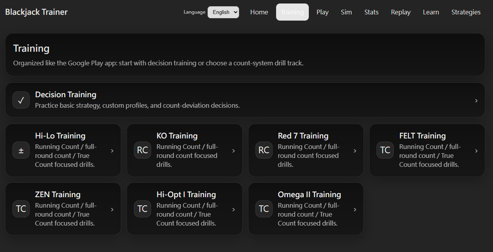
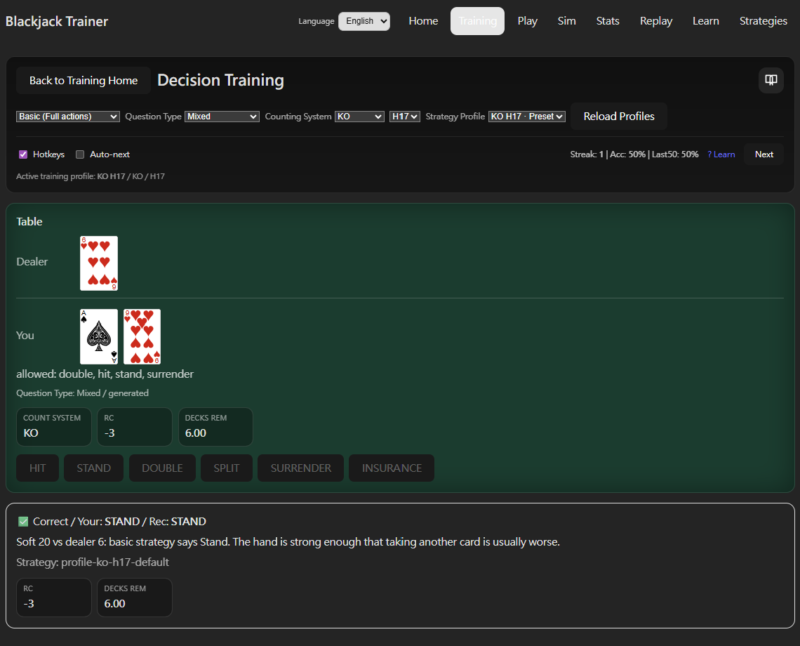
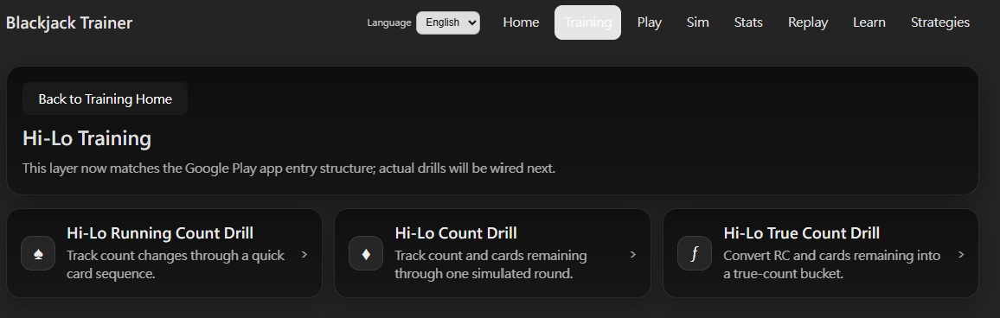

訓練
Training 模式把練習拆成四種獨立模式，分別針對決策正確率、Running Count 累加速度、True Count 換算，以及模擬真實發牌節奏的完整算牌追蹤。七套算牌系統均可在 Count Drill 中切換。

訓練模式概覽
Training 分成兩個主要訓練方向：
- Decision Training：專注在 blackjack 決策練習，包含基本策略、自訂 Strategy Profile 與算牌 Deviation，適合各程度使用者打好判斷基礎。
- 算牌系統訓練：七套算牌系統（Hi-Lo、KO、Red 7、FELT、Zen、Hi-Opt I、Omega II）各自有獨立的訓練入口，提供 Running Count Drill（快速累加練習）與 Count Drill（模擬真實發牌節奏的整局追蹤）；支援 True Count 換算的系統則另有 True Count Drill（換算心算練習）。

Decision Training
專注在 blackjack 的決策本身，包含基本策略與算牌 Deviation。
- Mode：選擇練習模式，決定練習時允許的動作範圍與判斷標準。
- 算牌系統與桌規：獨立選擇練習使用的算牌系統（支援全部七套）以及桌規（H17 / S17），出題內容對應調整。
- Strategy Profile：選擇練習依據的策略來源，可使用預設 Preset，或套用你在 Strategies 頁面自訂義的 Strategy Profile 進行練習——是將自訂 Deviation 規則實際應用在訓練中的主要方式。
- Question Type 分類：可指定練習類型，包含硬牌（Hard Totals）、軟牌（Soft Totals）、對子（Pairs）、加倍（Doubles）、投降（Surrender）、保險（Insurance）、Deviation，或混合出題。
- 即時回饋：每次選擇後立刻顯示是否正確，以及對應策略原因說明。
Deviation 類別會針對算牌才會出現的偏離決策重點出題，方便集中練習不常碰到的少見情境。

Running Count Drill
透過快速牌序練習目標算牌系統的 Running Count 累加速度。七套算牌系統各有獨立的 Running Count Drill 入口。
- 可設定發牌速度與牌序長度，從短牌序慢速開始，逐步加長加快。
- 起始 RC 可固定為 0 或設成隨機值，練習從不同 count 狀態接續計算。
- Display Mode 可切換一次一張、一次兩張或隨機張數手牌組，模擬真實牌桌節奏。
- 作答後顯示前面出現過的所有牌，方便回頭檢查漏算位置。
True Count Drill
練習把 Running Count 和剩餘牌數換算成 True Count。適用於使用 True Count 換算的算牌系統（Hi-Lo、FELT、Zen、Hi-Opt I、Omega II）。
- 題目給出 RC 與剩餘牌數，練習心算 True Count 的速度與準確度。
- 反覆練習不同 RC / 剩餘牌組合，可加快心算速度，並熟悉在實戰中快速做出下注判斷。
Count Drill
最接近真實牌桌的算牌練習。模擬莊家與多人玩家依序發牌，在完整牌局節奏中追蹤算牌。七套算牌系統各有獨立的 Count Drill 入口。
- 練習開始時給出起始 RC 與剩餘牌數，接著依設定人數與速度模擬一局牌。
- 發牌結束後回答最後的 RC 或剩餘牌數，確認是否能在接近實戰的節奏中穩定追蹤 count。
- 可調整玩家數量與發牌速度。
建議的練習順序：先用 Decision Training 穩定基本策略與 Deviation，再用 RC Drill 練累加速度，接著用 TC Drill 練換算，最後用 Count Drill 在整局節奏中整合這些能力。